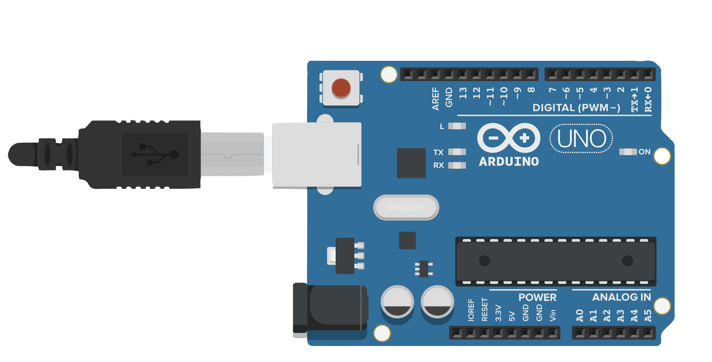
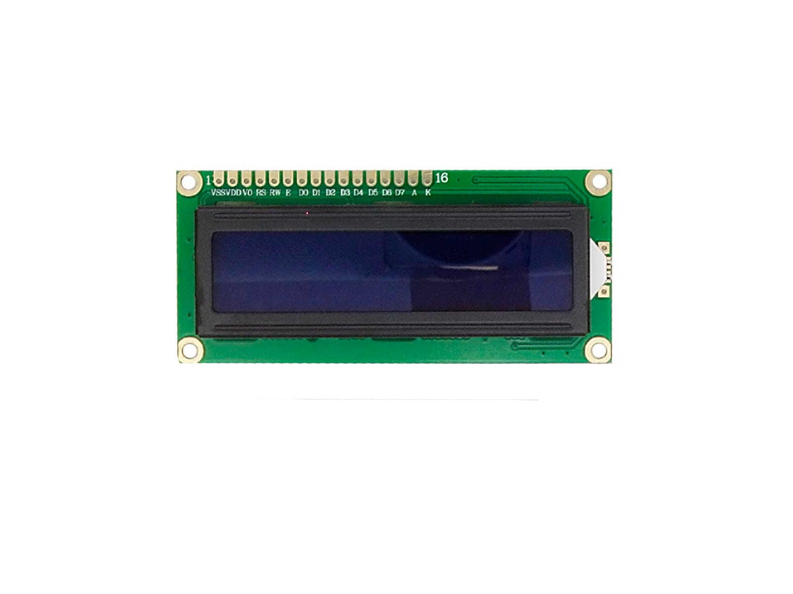
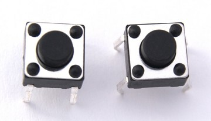
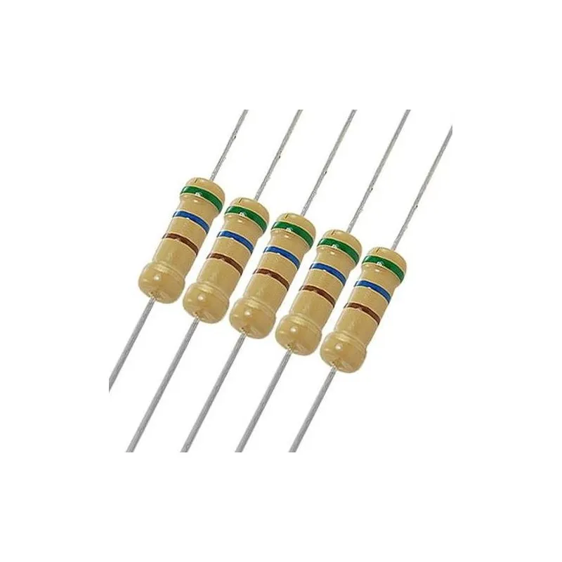
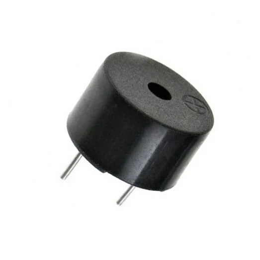
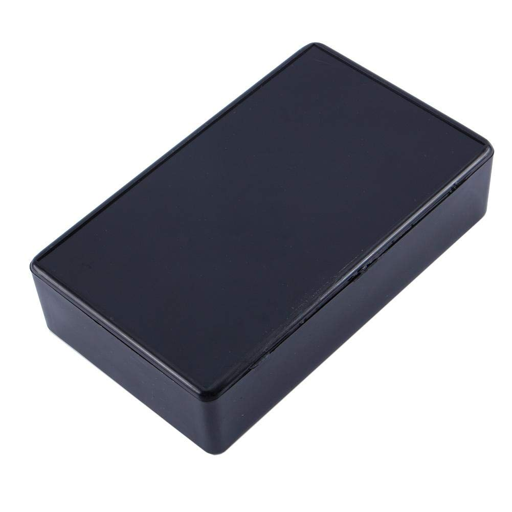

Componentes del Sistema
| Componente | Función | Descripción | Imagen |
|---|---|---|---|
| Arduino Uno | Control Principal | Ejecuta la programación y coordina el funcionamiento de todos los dispositivos. |
 |
| Pantalla LCD 16x2 | Visualización | Muestra la fecha, hora y mensajes del sistema de timbre escolar. |
 |
| Pulsador | Entrada Manual | Permite realizar pruebas o configuraciones del sistema. |
 |
| Resistencia | Protección | Ayuda a regular la corriente y proteger los componentes electrónicos. |
 |
| Buzzer | Alarma Sonora | Emite el sonido del timbre cuando llega la hora programada. |
 |
| Caja de Texto Programada | Interfaz | Muestra mensajes informativos y estados del sistema mediante código. |
 |